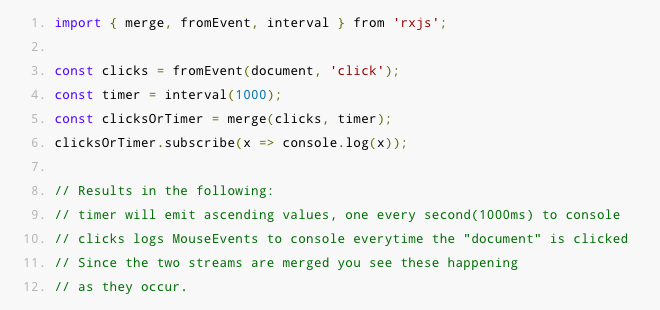
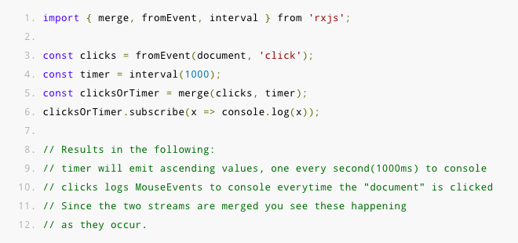

Operators
Operators are functions that build on the observables foundation to enable sophisticated manipulation of collections.
For example, RxJS defines operators such as map(), filter(), concat(), and flatMap().
Operators take configuration options, and they return a function that takes a source observable.
When executing this returned function, the operator observes the source observable’s emitted values, transforms them, and returns a new observable of those transformed values.

 
